Choux craquelin de Michalak
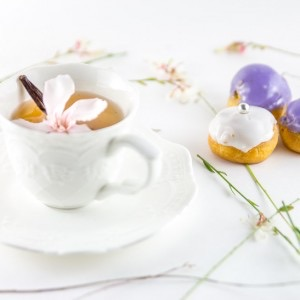
Ce soir je vais vous parler d’une recette et pas n’importe laquelle car il s’agit de la recette de choux craquelin de Michalak qu’il nous dévoile dans un de ses livres pour mon (notre?) plus grand bonheur! Avec cette recette fini les choux ratés (si si je vous le promets!)
Avant de parler de cette recette inratable je vais vous parler du pourquoi j’ai décidé de la faire la tout de suite, ce soir!
En effet, aujourd’hui c’est le rendez-vous de la Foodista challenge #11 et c’est Gwendoline du blog monptitcoingourmand qui était en charge de cette nouvelle édition. Et vous savez quoi? Je suis la grande retardataire de cette édition! Je m’en excuse mille fois mais quelques fois il y a des petits imprévus dans la vie qui font qu’on ne peut pas toujours faire ce que l’on veut et c’est un peu pour quelque chose comme ça que je suis en retard ce soir… Pour info, voici un petit rappel pour vous présenter ce qu’est la Foodista :
Il s’agit d’un défi culinaire, entre blogueurs et non blogueurs autour d’un thème commun décidé par la marraine désignée à chaque édition, crée par… moi-même! J’ai donc fixé les règles du jeu et chaque marraine doit en plus de décider d’un thème, choisir deux règles parmi les suivantes (histoire de pimenter un peu le tout): – Un ingrédient imposé pour les recettes sucrées et un autre ingrédient pour les recettes salées (un ingrédient commun si cela est possible) ; – Une couleur qui devra être présente dans la recette ou dans la décoration ; – Un pays qui inspirera les recettes du thème ; – Un accessoire qui devra se trouver sur les photos
Anciennes éditions :
Foodista Challenge #1 : Steph de Cuisine moi un mouton : « Cupcakes & muffins » Foodista Challenge #2 : Lucie de Goulucieusement : « Goûter d’automne » Foodista Challenge #3 : Aude de Contes et Délices : « Le Brunch » Foodista Challenge #4: Julia de Les Cookines : « Les recettes cosy de Scandinavie » Foodista Challenge #5: Anaïs de Lemon and Sardine : « Un zeste de Méditerranée» Foodista Challenge #6: Nath de Pourquoi je grossis… : « Petits délices… pour grands gourmands » Foodista Challenge #7: Gordana de Recettes à gogo : « Préparons nos picnics de printemps » Foodista Challenge #8: Audrey de Cooking n co : « Saveurs d’Asie » Foodista Challenge #9: Adeline de Cook’n blog: « Si on se rafraîchissait avec des glaces? » Foodista Challenge #10: Margaux de Verveine Citron: « La tarte aux fruits »
Pour cette édition Gwendoline a choisi comme thème : la vanille, j’étais ravie de ce thème qui tombait à pic. En effet, mes parents m’avaient ramené de magnifiques et très parfumées gousses de vanille tout droit venue de l’île de la Réunion. Je pense d’ailleurs que si ce thème n’avait pas été proposé je les aurais gardées une éternité dans mes tiroirs… Pour la petite anecdote, je suis du genre à vouloir attendre la meilleure recette au meilleur moment pour utiliser ces produits « souvenirs », mais c’est un problème car souvent je n’en fais rien, de peur que la recette soit trop quelconque… Je sais c’est bête mais on ne me changera pas!
Revenons maintenant à nos moutons, ou plutôt à nous petits choux…
Depuis quelque temps l’idée de faire des choux me trottait dans la tête mais là encore je n’avais pas envie de me lancer tête baissée dans n’importe quelle recette. J’avais déjà fait des choux pour faire mes profiteroles (ici) en utilisant la recette et les conseils d’Anne-Sophie Pic mais pour cette fois je me suis laissé séduire (par Christophe Michalak) par la recette « inratable » des choux craquelins de Michalak et le résultat fut carrément au rendez-vous!
Comme vous avez dû vous en rendre compte, les choux craquelins sont carrément tendances et je peux affirmer maintenant que je les ai préparés puis dégustés (dévorés) je comprend totalement pourquoi. La tenue des choux est juste parfaite! Ils sont bien ronds, bien lisses et le craquelin leur donne un super habillage visuellement parlant.
Pour coller au thème de Gwendoline, j’ai donc fait des choux à la vanille mais également des choux à la myrtille (car dans les règles de cette édition il fallait aussi inclure un ingrédient violet^^). Ma crème pâtissière est donc à la vanille et à la vanille-myrtille.
Mais pour cette recette j’ai commis une petite erreur… En effet pour faire la recette des choux craquelin de Christophe Michalak il est conseillé que le craquelin soit au maximum d’un centimètre en dessous de la taille des choux ce qui ne fut pas le cas pour moi (mes choux font 4 cm et mon craquelin 2.5 cm…) et du coup certains de mes choux sont un peu moins lisses… Hormis ce petit problème de taille je vous conseille de vous laisser tenter par cette recette car c’est l’assurance d’avoir de jolis choux à coup sûr! Je vous laisse avec la recette en image et j’espère qu’elle vous plaira 🙂
Ingrédients
- Beurre demi-sel - 40g
- Farine - 50g
- Cassonnade - 50g
- Beurre - 45g
- Farine (T55 c'est mieux) - 55g
- Eau - 50g
- Lait - 50g
- Oeufs - 2 x 50g (100g)
- Sel - 1 pincée
- Sucre - 1 pincée
- Lait - 750ml
- Farine - 75g
- Sucre - 150g
- Jaune d'oeuf - 4
- Vanille - 1 gousse
- Beurre - une noisette
- Jus de myrtilles (facultatif) - 35g
- Fondant - 300g
- Colorant
Instructions
- Mettre tous les ingrédients dans un saladier
- A la main, former une boule en malaxant bien la pâte
- Étaler la pâte finement (2mm) entre deux feuilles de papier sulfurisé
- Pré-découper des cercles plus petit de 1cm maximum comparé à la taille de vos choux
- Réserver au congélateur pendant la préparation de la pâte à choux
- Préchauffer le four à 240°
- Dans une casserole, verser le lait, l'eau, le beurre découpé en morceaux, le sel ainsi que le sucre
- Porter à ébullition.
- Pendant ce temps là, battre vos 100g d’œufs énergiquement et les séparer dans 2 bols mettant 50g dans chaque
- Hors du feu, ajouter toute la farine et mélanger pour obtenir une pâte homogène
- Remettre la casserole sur feu doux
- Il faut maintenant "assécher" la pâte (c'est à dire qu'il faut remuer à l'aide de votre fouet sans cesse pendant environ une minute jusqu'à que la pâte forme une boule qui se décolle très facilement de la casserole)
- Transférer la pâte dans un saladier et la faire refroidir (perso j’utilise un saladier en inox car ça refroidit plus vite) en remuant sans arrêter à l'aide d'un fouet pour qu'elle atteigne la température de 45°.
- Ajouter la moitié des œufs battus (50g) et remuer jusqu'à obtention d'un mélange bien homogène
- Faire la même chose avec l'autre moitié des œufs battus.
- Pour vous aider, dessiner des gabarits de la taille des choux que vous souhaitez réaliser sur du papier cuisson
- Mettre la pâte à choux dans une poche à douille, munie d'une douille unie
- Remplir vos gabarits
- Sortir le craquelin du congélateur et détacher les cercles déjà prédécoupés en les disposant sur chaque futur chou
- Enfourner et laisser cuire four éteint pendant 10 minutes précises
- Au bout de 10 minutes, rallumer le four et cuire les choux à 160° environ 30 minutes. Notez qu'il faudra commencer à vérifier la cuisson de vos choux dès 20 minutes et selon les fours la cuisson peut aller jusqu'à 40 minutes donc ne soyez pas étonnés
- Inciser la gousse de vanille en deux et récupérer les graines
- Dans une casserole verser le lait et laisser infuser les graines ainsi que la gousse pendant au minimum 15 minutes
- Dans le bol de votre robot ou dans un saladier, faire blanchir les jaunes avec le sucre
- Verser la farine et bien mélanger jusqu'à qu'elle soit bien incorporée
- Ôter la gousse de vanille qui infuse
- Faire bouillir le lait
- Sortir le lait du feu
- Verser la moitié du lait dans le mélange farine-oeufs-sucre tout en fouettant pour qu'il soit bien incorporé
- Sur feu doux, verser ce dernier mélange farine-oeufs-sucre-lait dans la casserole contenant le lait restant
- Remuer énergiquement jusqu'à ce que la crème épaississe
- Dès les premières bulles d'ébullition continuer de battre 30 secondes puis sortir du feu.
- Déposer une noisette de beurre, laisser fondre
- Mélanger puis filmer au contact et laisser refroidir
- Dans cette recette, j'ai pesé 260g de crème pâtissière à la vanille à laquelle j'ai incorporé les 35g de jus de myrtilles que j'ai ensuite filmé et laisser refroidir.
- Percer un petit trou en-dessous de chaque chou à l'aide d'un cure dent par exemple.
- Récupérer la crème pâtissière refroidie
- Versez-la dans une poche à douille munie d'une douille pour permettre de garnir les choux
- Placer la douille à l'entrée du trou et garnir vos choux de crème
- Suivre les indications du paquet de fondant que vous achetez
- Sinon, porter le fondant à une température de travail de 34°C au bain-marie.
- Si vous voulez vous pouvez ajouter du colorant (ici j'ai ajouté du colorant violet pour les choux à la myrtille).
- Attention de ne pas trop faire cuire le fondant car il peut vite se dessécher
- Plonger la tête du chou dans le fondant et lisser les imperfections avec une cuillère ou avec les doigts 😉
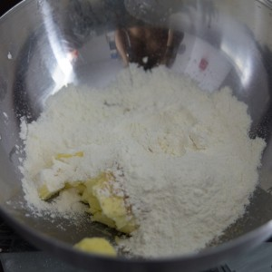
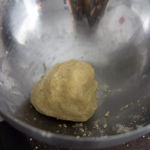
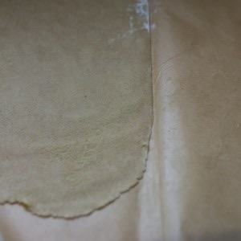
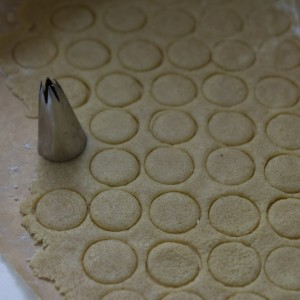
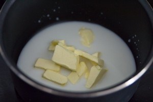
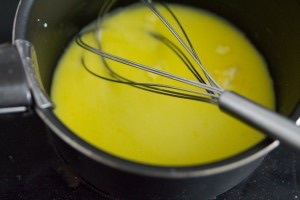
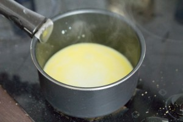
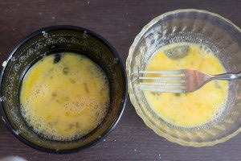
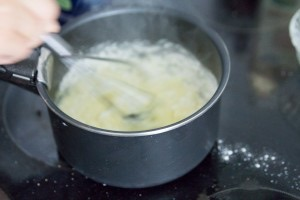
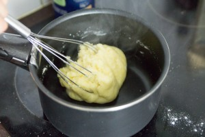
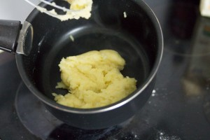
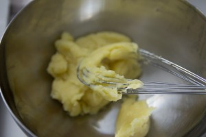
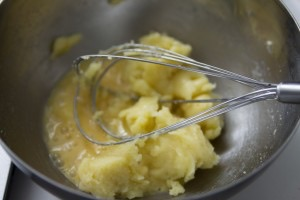
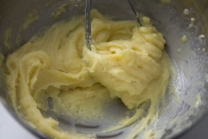
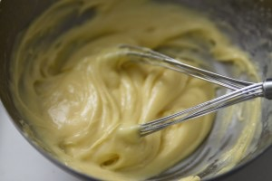
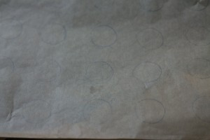
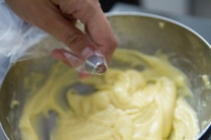
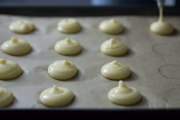
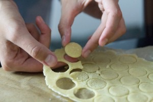
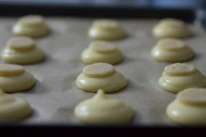
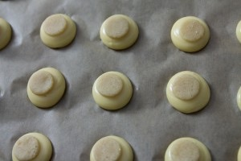
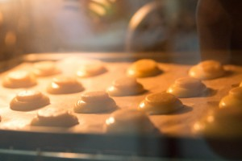
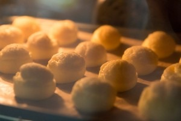
Les tips de la communauté
Petits choux fins avec craquelin (sucre caramélisé croustillant). Recette Michalak bien exécutée avec résultat décoratif très réussi. Attend-on longtemps: plus dur. Croustillant supplémentaire justifie recette par les testeurs convaincus.
Astuces
- Craquelin apporte texture croustillante délicieuse et aspect beau
- Attendre 24h après préparation pour meilleur résultat
- Utiliser colorants Wilton gel (sur internet)
- Jus myrtille frais (myrtilles pressées) pour saveur
Variantes suggérées
- Tenter myrtilles fraîches mixées si jus pressé indisponible
Ajustements signalés
- que je teste le craquelin sur les choux …